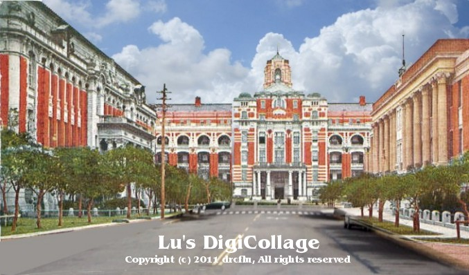
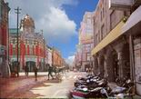
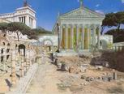
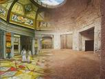

台北景觀的滄海桑田
Part 1. Taipei scene in the past and nowadays
台灣景觀與西方的邂逅 Part 2. The Meeting of Eastern & Western scene
羅馬建築今昔
Part 3. Rome Architeture in the past and nowadays

羅馬室內今昔
Part 4. Rome Interior in the past and nowadays

Top Back Home